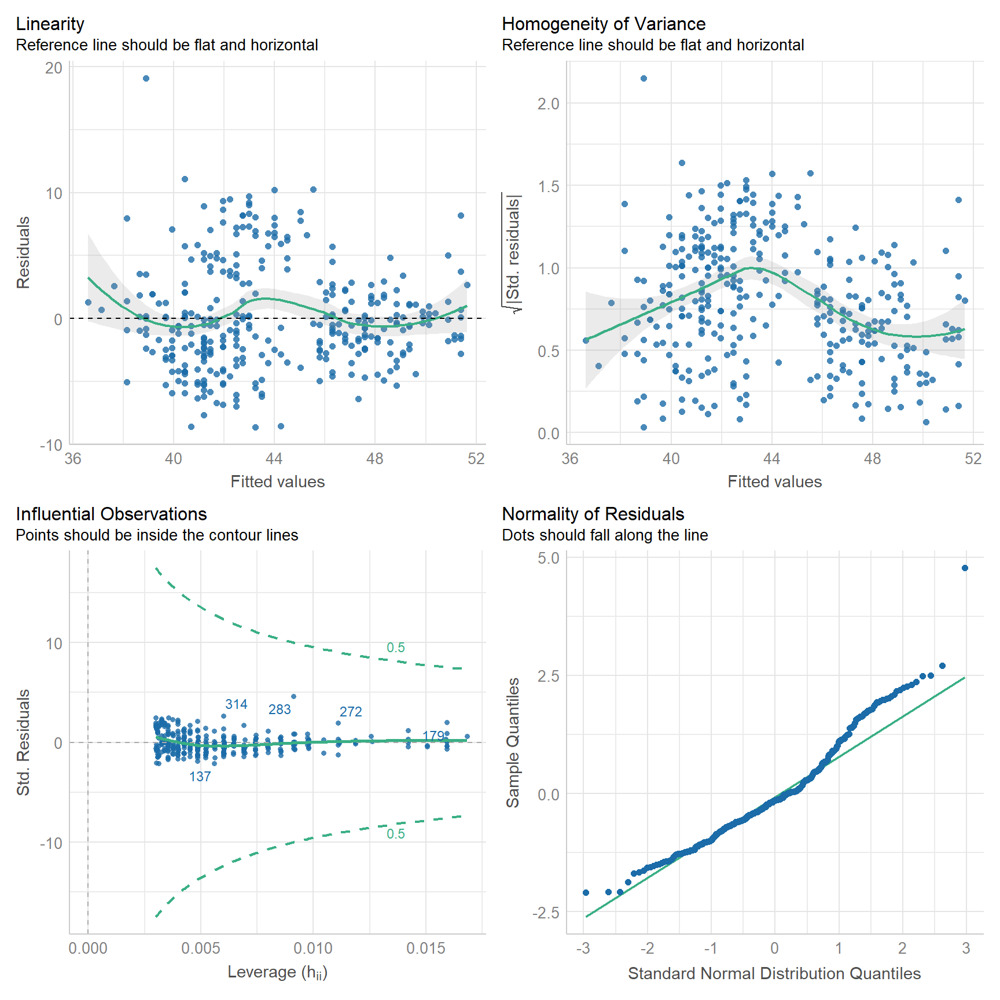

library(archdata)
library(palmerpenguins)
library(performance)
library(skimr)
library(tidyverse)Lab 07: Evaluating Linear Models
(Stats) Learn how to interpret linear models, make predictions, and use standard tests and diagnostics for evaluation, including making diagnostic plots. (R) Model summaries. Diagnostic plots. Prediction and plotting.
Outline
Objectives
This lab will guide you through the process of
- importing and exporting data tables
- Visualizing a linear model
- Using AB lines
- Using predictions
- Adding prediction and confidence intervals
- Evaluating a linear model
- interpreting model summaries in R
- t-tests
- ANOVA
- Diagnostic plots with
plot()andcheck_model()- Residual Histogram
- Raw Residuals v Fitted
- Standardized Residuals v Fitted
- Residuals v Leverage (and Cook’s Distance)
- Q-Q Plot
R Packages
We will be using the following packages:
You’ll want to install performance with install.packages("performance").
Data
-
cars- Includes measurements of car speed and stopping distance.
- package:
datasets - reference: https://stat.ethz.ch/R-manual/R-devel/library/datasets/html/cars.html
-
DartPoints- Includes measurements of 91 Archaic dart points recovered during surface surveys at Fort Hood, Texas.
- package:
archdata - reference: https://cran.r-project.org/web/packages/archdata/archdata.pdf
-
OxfordPots- Includes percentages of late Romano-British Oxford Pottery on 30 sites, along with their distance from Oxford.
- reference: https://cran.r-project.org/web/packages/archdata/archdata.pdf
-
penguins- Includes measurements for penguin species, island in Palmer Archipelago, size (flipper length, body mass, bill dimensions), and sex.
- package:
palmerpenguins - reference: https://allisonhorst.github.io/palmerpenguins/reference/penguins.html
Read/Write Data

This sections covers how to import data into and export data out of R, with a focus on rectangular data or tables. While many formats exist for representing rectangular data in plain-text file, the most common is perhaps common-separated values. You can spot this format by looking for files on your computer with the .csv extension. If we had saved the data represented in Figure 1 to a csv file, the plain text of that file would look like this:
type, length, width, height
Elko, 2.03, 0.8, 3.23
Rosegate, 1.4, 0.4, 2.4
DSN, 1.9, 0.3, 1.29
Elko, 2.1, 0.7, 2.7
Clovis, 3.3, 0.95, 4.15 with the first row typically assumed to contain the column names, also known as the header. To prove this to yourself, you can open a .csv file using a text editor like Notepad.
Base R provides two functions for reading and writing these sorts of files: read.csv() and write.csv(). These have some unfortunate default behavior, however, so we are going to focus on their tidyverse equivalents. Those are read_csv() and write_csv() from the readr package. There are three main differences between these functions:
- the tidy functions cannot be used without loading
readr, -
read_csv()reads the data in as a tibble rather than a data.frame ,and -
write_csv()does not by default add a column with row names or row ids to the exported csv file.
- is a cost of doing business, but (2) and (3) more than make up for that.
File Paths
To read and write data into R, you have to point R to where that data lives on your computer, meaning you have to specify a path to the file that holds the data. Suppose, for example, the penguins.csv file lives on Leslie Knope’s computer in this location:
C:/Users/Leslie_Knope/qaad-course/data/penguins.csvThis is a file path. The “/” denotes containment, meaning the thing to the right is within the thing to the left, so the penguins.csv file is in the data folder, which is in the qaad-course folder, which is in the Leslie_Knope folder, which is in the Users folder, which is in the C: folder. I have called them “folders” here, of course, but you will also often hear them referred to as “directories.”
To read the penguins data into R from the location specified by this file path, you simply feed the file path as a character string to read_csv() like so:
penguins <- read_csv("C:/Users/Leslie_Knope/qaad-course/data/penguins.csv")Note that you will usually want to assign the table to an object, so that you can reference it later on during your R session.
If you have the data in R and you want to write to this location, it works much the same way. The only difference is that you have to tell write_csv() what table you are wanting to write to disc, hence:
write_csv(penguins, "C:/Users/Leslie_Knope/qaad-course/data/penguins.csv")Absolute v Relative Paths
The path listed above is known as an absolute path because it starts at the top most directory in the file path, namely “C:”, and works out from there to the exact location of the file. This top level directory is also known as the root directory. That’s “C:” for Windows systems. For MacOS the root is, well, “root”.
Whenever you open R, your session happens somewhere on your computer, meaning it has some sense of its location within your file system. This is known as the working directory. For instance, when Leslie opens an R session, it might open in her “qaad-course” folder. The location of her working directory is, thus, “C:/Users/Leslie_Knope/qaad-course.” Because of this, she does not have to specify the entire file path to the penguins file. All she needs to specify is “data/penguins.csv,” as in read_csv("data/penguins.csv"). This is known as a relative file path, as it is relative to the working directory.
Of course, R doesn’t just open anywhere on your computer. By default, it will always open in the same place (usually the Documents folder on Windows). But you can then point it to a specific directory on your computer where you would like to work. The traditional way of doing this is with the function setwd(), as in
setwd("C:/Users/Leslie_Knope/qaad-course/data/penguins.csv")This is a brittle method, however, as it requires specifying the working directory using an absolute file path. So, if Leslie changes the location of qaad-course on her computer, if she moves it to, say, the parks-and-rec folder, it will no longer work. And, if Leslie wants to share her qaad-course folder - all the work and data and R code - with someone else, so they save that folder onto their own computer, again the call to setwd() with the absolute path will not work. The actual path could be “C:/Users/Gerry/…” or “C:/Users/Jerry/…” or something to that effect, and yet the call to setwd() uses “C:/Users/Leslie_Knope/…”.
The alternative to setting the working directory with setwd() is to use R projects. Fortunately, you have already done this for this class! Whenever you open an R project, the R session will automatically be set to the directory where that R project lives, whether that is on Leslie’s computer or Gerry’s or Andy’s or April’s. Doesn’t matter. Then you can use relative paths as you please, as long as you keep all the necessary data and code together in that project folder, which is what you should do!
There are some extra advantages to using projects, but we’ll leave it at that for now.
Exercises
- Make sure your working directory is set to the R project folder for the course!
- Use
write_csv()to write thecarsdata to a file called cars.csv in your project’s data folder. - Remove the cars data from your environment with
remove(cars). If you look in the environment pane of RStudio (in the top right corner), you should see that thecarstable has been removed. - Now read cars.csv back into R with
read_csv()and assign it tocars. Check to make sure the table is back in your environment.
Visualize Model
Here we are going to use ordinary least squares to build a simple linear model of penguin bill length as a function of flipper length. To aid in the interpretation of this model, it is useful to visualize the relationship or trend it suggests (if it does suggest one!). Before building that model, however, you should, as always, make sure to visualize your data! In this case, we make a simple scatter plot.
# clean up data, remove rows with missing data
penguins <- na.omit(penguins)
ggplot(penguins, aes(flipper_length_mm, bill_length_mm)) +
geom_point(size = 2) +
labs(
x = "Flipper Length (mm)",
y = "Bill Length (mm)"
) +
theme_minimal()
What is the relationship here? Let’s see if a linear model can help us out.
penguins_model <- lm(bill_length_mm ~ flipper_length_mm, data = penguins)
summary(penguins_model)
#>
#> Call:
#> lm(formula = bill_length_mm ~ flipper_length_mm, data = penguins)
#>
#> Residuals:
#> Min 1Q Median 3Q Max
#> -8.637 -2.698 -0.579 2.066 19.095
#>
#> Coefficients:
#> Estimate Std. Error t value Pr(>|t|)
#> (Intercept) -7.2186 3.2717 -2.21 0.028 *
#> flipper_length_mm 0.2548 0.0162 15.69 <0.0000000000000002 ***
#> ---
#> Signif. codes: 0 '***' 0.001 '**' 0.01 '*' 0.05 '.' 0.1 ' ' 1
#>
#> Residual standard error: 4.15 on 331 degrees of freedom
#> Multiple R-squared: 0.427, Adjusted R-squared: 0.425
#> F-statistic: 246 on 1 and 331 DF, p-value: <0.0000000000000002There are two ways to visualize this model:
- With abline. Use the estimated coefficients (the slope and intercept) to construct a formula that will calculate values of y across the range of x. The formula has the form: \(y \sim a + bx\), where is \(a\) is the intercept and \(b\) is the slope, hence abline.
- With predict. Use the model to estimate values of \(y\) for specified values of \(x\) and construct a line from those values.
OK. There’s actually three ways to do it. The most direct way that ggplot() offers uses geom_smooth(), but we’ll save that one for another time. The point here isn’t just to learn how to visualize a linear model, but to learn what it is that we are visualizing and what it means. So, let’s try an example of each, so you can get a feel for how to do this.
ABline
ggplot() has a geometry for plotting AB lines. As you might have guessed, it’s geom_abline(). All we need to do is extract the values of the coefficients from the model and feed these to the slope and intercept parameters, respectively. To do that, we will use the coefficients() function. This provides a named vector that we can use to get our estimates. Notice that we use <vector>[[<variable]] like we do with tables, only this time we are extracting a single value.
betas <- coefficients(penguins_model)
betas
#> (Intercept) flipper_length_mm
#> -7.219 0.255
intercept <- betas[["(Intercept)"]]
slope <- betas[["flipper_length_mm"]]Now, we can plot our model over the data. This is always useful, as you can see how the model compares to the actual observations.
ggplot(penguins, aes(flipper_length_mm, bill_length_mm)) +
geom_point(size = 2) +
labs(
x = "Flipper Length (mm)",
y = "Bill Length (mm)"
) +
theme_minimal() +
geom_abline(
slope = slope,
intercept = intercept,
color = "darkred",
linewidth = 1
)With this method, we simply supply the coefficients. ggplot() then uses those to estimate values of y for each value of x shown within the range of x represented by the plot. Notice that the line continues across the full range of the graph. This shows that the model assumes the relationship is linear, meaning in this case that it will always increase to the right (to infinity) and always decrease to the left (to negative infinity)
Predict
We can also generate values of y manually with the predict() function. The key here is to supply it with our model, which it will then use to make predictions.
penguins <- penguins |> mutate(estimates = predict(penguins_model))
ggplot(penguins) +
geom_point(
aes(flipper_length_mm, bill_length_mm),
size = 2
) +
labs(
x = "Flipper Length (mm)",
y = "Bill Length (mm)"
) +
theme_minimal() +
geom_line(
aes(flipper_length_mm, estimates),
color = "darkred",
size = 1
)
This is very similar to our abline graph above, but with the important difference that the trend line or modeled relationship does not extend across the entire graph.
Note that you can use predict() to estimate the value of the response at specific values of the independent variable. To do that, you simply feed the predict() function, specifically its newdata parameter, a table with the values of the independent variable that interest you. For example, suppose you wanted to know what bill length this model would expect for a penguin having a body mass of, say, 4,500 grams. We can figure that out this way:
If you like, you can also do that for multiple values like so:
Intervals
You can use predict() to calculate the prediction interval for these estimates by specifying interval = "prediction". Note, too, that we ask it to provide that interval at level = 0.95 to ensure the prediction interval is estimated at the 95% level. Recall that this is the interval within which we expect the value of Y to fall with 95% probability for each value of X.
predict(
penguins_model,
newdata = new_data,
interval = "prediction",
level = 0.95
)
#> fit lwr upr
#> 1 41.2 33.0 49.4
#> 2 42.5 34.3 50.6
#> 3 43.7 35.6 51.9
#> 4 45.0 36.8 53.2If we set interval = "confidence", we can get the confidence interval, or the interval within which we expect the average value of Y to fall with 95% probability for each value of X.
predict(
penguins_model,
newdata = new_data,
interval = "confidence",
level = 0.95
)
#> fit lwr upr
#> 1 41.2 40.6 41.8
#> 2 42.5 42.0 43.0
#> 3 43.7 43.3 44.2
#> 4 45.0 44.6 45.5We can actually add these to our model using the function geom_ribbon() like so.
confidence <- predict(
penguins_model,
interval = "confidence",
level = 0.95
)
# coerce to a table
confidence <- as_tibble(confidence)
# add the X values
confidence <- confidence |> mutate(flipper_length_mm = penguins$flipper_length_mm)
ggplot() +
geom_ribbon(
data = confidence,
aes(x = flipper_length_mm, ymin = lwr, ymax = upr),
fill = "gray85"
) +
geom_line(
data = confidence,
aes(flipper_length_mm, fit),
color = "darkred",
linewidth = 1
) +
geom_point(
data = penguins,
aes(flipper_length_mm, bill_length_mm),
size = 2
) +
theme_minimal() +
labs(
x = "Flipper Length (mm)",
y = "Bill Length (mm)"
)The ribbon geometry is, in effect, a polygon defined by an upper and lower line (ymax and ymin, respectively). Note that we added the ribbon before adding the trend line. If we did the reverse, the ribbon would be plotted over the trend line, thus obscuring it.
Exercises
- Build a model of penguin flipper length by body mass.
- Make sure to visualize your data first! Make a scatter plot!
- Now plot the modeled relationship between flipper length and body mass.
- Use
coefficients()andgeom_abline(). - Use
predict()andgeom_line(). - Add the confidence interval to the second plot using
geom_ribbon().
- Use
Model Summary
Let’s return to the summary() of our model and discuss it in a little more detail.
summary(penguins_model)
#>
#> Call:
#> lm(formula = bill_length_mm ~ flipper_length_mm, data = penguins)
#>
#> Residuals:
#> Min 1Q Median 3Q Max
#> -8.637 -2.698 -0.579 2.066 19.095
#>
#> Coefficients:
#> Estimate Std. Error t value Pr(>|t|)
#> (Intercept) -7.2186 3.2717 -2.21 0.028 *
#> flipper_length_mm 0.2548 0.0162 15.69 <0.0000000000000002 ***
#> ---
#> Signif. codes: 0 '***' 0.001 '**' 0.01 '*' 0.05 '.' 0.1 ' ' 1
#>
#> Residual standard error: 4.15 on 331 degrees of freedom
#> Multiple R-squared: 0.427, Adjusted R-squared: 0.425
#> F-statistic: 246 on 1 and 331 DF, p-value: <0.0000000000000002There are four major components of the summary: (i) the function call, (ii) the residual distribution, (iii) the coefficients table, and (iv) the summary statistics. Let’s work through each one of these separately.
The Call. This refers to your “call” to the lm() function, which includes the model specification (meaning, the formula used to specify the model) and the data used to fit that model specification.
The Residual Distribution. This refers to the distribution of the residuals, here represented using quartiles and the minimum and maximum values. You can visualize the quartiles for the residuals really quickly with a boxplot.
The thing to keep in mind here is that the linear model fit with OLS assumes that the residuals are normally distributed, \(\epsilon \approx N(0, \sigma)\) with a mean of zero and standard deviation, \(\sigma\). Crucially, in a normal distribution, the median value is equal to the mean. In the boxplot, that means the dark line representing the median should be really close to zero. The first and third quartiles should also be equidistant from the median. In the boxplot, that means the median bar should be about halfway between top (3Q) and bottom (1Q) of the box. If it’s not, that means your residuals are not normally distributed. The minimum and maximum values kinda have this flavor, but not to the same degree.
The Coefficients Table. The number of rows in the coefficients table is equal to the number of variables in the model specification plus one. In this case, that’s two rows, one for the intercept and one for the flipper length variable. There are also five columns, one for the variables and the other four listing their coefficient estimates, the standard errors of those estimates, the t-statistics associated with the estimates, and the p-values for those t-statistics. If you just want the coefficients, as noted above, you can use the coefficients() function to get them. You can also get the variable names with variable.names().
variable.names(penguins_model)
#> [1] "(Intercept)" "flipper_length_mm"
coefficients(penguins_model)
#> (Intercept) flipper_length_mm
#> -7.219 0.255Note that the t-statistic is just the ratio of the coefficient estimate to its standard error:
\[t = \frac{\beta_i}{se(\beta_i)}\]
If you multiply the standard error of the coefficients by $$1.96, you get the 95% confidence interval for the coefficient estimate. You can extract these confidence intervals from the linear model with the confint() function.
confint(penguins_model)
#> 2.5 % 97.5 %
#> (Intercept) -13.655 -0.783
#> flipper_length_mm 0.223 0.287You can also visualize those intervals using a dot and whisker plot using geom_errorbar() like so:
# getting the standard errors is a smidge awkward
betas <- tibble(
x = coefficients(penguins_model),
y = variable.names(penguins_model),
se = coefficients(summary(penguins_model))[, "Std. Error"]
)
ggplot(betas, aes(x, y)) +
geom_vline(
xintercept = 0,
linewidth = 1,
color = "darkred"
) +
geom_point(size = 3) +
geom_errorbar(
aes(xmin = x - (1.96*se), xmax = x + (1.96*se)),
width = 0.33 # height of whiskers
) +
labs(
x = "Estimate",
y = NULL,
title = "Model Coefficients"
) +
theme_minimal()Two things to note here. First, the width of the confidence interval tells you something about how certain we are about the estimate, wider intervals mean less certainty, narrow intervals more certainty. Second, you can visually inspect whether the 95% confidence intervals overlap with zero. In this case, they do not. This tells you that it is extremely improbable that the coefficients could equal zero, since there is only a 2.5% chance or less of the coefficient being zero for each estimate. So, the dot and whisker plot with the coefficient estimates and their standard errors is effectively a visual representation of the t-test.
Summary statistics. The last element of the summary() is a set of statistics. This includes the residual standard error or the standard deviation in the error. The formula for this statistic is
\[ \begin{aligned} \sigma^2_\epsilon &= \frac{1}{n-k}\sum \epsilon^2 \\ se_\epsilon &= \sqrt{\sigma^2} \end{aligned} \] where \(n-k\) is the degrees of freedom, in this case the number of observation \(n\) minus the number of model parameters \(k\) (meaning \(\beta_0\) and \(\beta_1\)). In R, you can calculate this standard error like so:
The set of summary statistics for a linear model also includes the R-squared value, which - if you recall - is the ratio of the Model Sum of Squares \(SS_M\) to the Total Sum of Squares \(SS_T\) (defined by the null or intercept-only model). This provides a measure of the proportion of the total variance explained by the model. You will also see here the so-called Adjusted R-squared. This is simply the R-squared statistic weighted by the complexity of the model, which is important because R-squared tends to increase with increases in model complexity, meaning each time you add an independent variable to a model it’s going to capture some amount of the total variance in the dependent variable.
Finally, there is the F-statistic, which is similar to the R-squared value, but is estimated by the ratio of the model variance to the residual variance. The p-value is obtained by comparing the F-statistic to the F-distribution with \(k-1=1\) and \(n-k=331\) degrees of freedom. These are the summary statistics provided by the ANOVA, so let’s dive into that in the next section.
Exercises
- Build a model of penguin flipper length by body mass.
- Make sure to visualize your data first! Make a scatter plot!
- Run
summary()on your model.- Do the residuals appear to be normally distributed?
- What is the R-Squared value?
- Does body mass explain much of the variance in flipper length?
- How would you interpret this result? What is the relationship between flipper length and body mass?
ANOVA
A really powerful way to evaluate a linear model is to submit it to an ANOVA test. If you recall, an ANOVA for comparing the distribution of a variable across groups compares the ratio of the between-group variance to the within-group variance. This is known as an F-statistic. It gives us a sense of how much variance is coming from the groups themselves versus how much is coming from the individual observations within each group. If more of the variance is coming from the groups and not the individual observations, that indicates that at least one of the groups is not like the others. Crucially, the F-statistic can be compared to an F-distribution to determine whether the statistic is likely under the null hypothesis that the groups are not different.
An ANOVA applied to a statistical model works in much the same way. The only catch is that we are not comparing the variance between groups but between models. More precisely, we are comparing the variance captured by the model to the remaining or residual variance. That is,
\[F = \frac{\text{model variance}}{\text{residual variance}}\]
where model variance is equal to \(SS_M/k\) and residual variance is equal to \(SS_R/(n-k-1)\) (or the square of the residual standard error). The sum of these two squared errors (\(SS_M\) and \(SS_R\)) is actually the total sum of squares \(SS_T\), which is defined by the mean or intercept-only model (sometimes referred to as the null model). Because the model includes at least one more parameter than the null model, an ANOVA applied to such a model can be thought of as answering the following
Question: does the model capture a sufficient amount of the variance to make its increased complexity worthwhile?
Again, taking the ratio of the variance explained by the model to the residual variance provides an estimate of the F-statistic, which can be compared to the F-distribution to determine how likely it is under the null hypothesis that the more complex model does not explain more variance than the null model.
To conduct this test in R, it’s quite simple. Simply supply a fitted linear model to the aov() function. First, however, make sure to visualize your data! Note that summarizing the ANOVA with summary() prints an ANOVA table.
The Mean Squared Error (Mean Sq) is calculated by dividing the Sum of Squares (Sum Sq) by the degrees of freedom (Df), the latter being a function of the number of independent variables or predictors in the model and the number of observations. MSE is, thus, another way of referring to the model and residual variance. The F-statistic is then calculated by dividing the Model variance or MSE (in this case flipper_length_mm) by the Residual variance or MSE (Residuals), in this case \(F = 4235/17 = 246.2\). By comparing this statistic to an F-distribution with those degrees of freedom, we get a very small p-value, much less than the standard critical value of 0.05. We can thus reject the null hypothesis and conclude that the variance explained by this model is indeed worth the price of increased complexity.
Exercises
- Use
aov()to conduct an ANOVA on the penguins model you created in the previous section.- Be sure to state your null and alternative hypotheses.
- Specify your critical value, too.
- Summarize the penguins model again.
- Now summarize the ANOVA with
summary().- Does the model provide a significant improvement over the null model?
- Did you get the same F-statistic and p-value as in the model summary?
Diagnostic Plots
Whenever you build a model, it is critically important to visualize the model and its assumptions as this will give you some indication about whether those assumptions have been met. Here, we’ll visualize our penguins model, starting with the residuals.
Residuals
One important assumption of OLS regression is that the errors are normally distributed. A simple histogram of the residuals will give us some indication of that. To get the residuals in our model, we can use the residuals() function.
penguin_fit <- tibble(residuals = residuals(penguins_model))
ggplot(penguin_fit, aes(residuals)) +
geom_histogram() +
labs(
x = "Residual Bill Length (mm)",
y = "Count"
)Do these look normally distributed to you? Do they have the approximate shape of a bell curve? If a visual check does not suffice, you can always try a Shapiro-Wilk test for normality. To do that in R, you can use the shapiro.test() function. Note that the null hypothesis for this test is that the variable is not normally distributed.
shapiro.test(residuals(penguins_model))
#>
#> Shapiro-Wilk normality test
#>
#> data: residuals(penguins_model)
#> W = 1, p-value = 0.00000005Additional Diagnostics
Base R provides a really useful plot() method for linear models. You just feed this function your linear model and tell it which kind of plot you want to make. Here is a list of options, which you can supply to the which parameter:
- Residuals vs Fitted plot
- Normal Q-Q
- Scale-Location
- Cook’s Distance
- Residuals vs Leverage
- Cook’s Distance vs Leverage
Here is an example of the Q-Q Plot for our penguins model.
plot(penguins_model, which = 2)The plot() function in this case is extremely utilitarian. If you just want a quick visual diagnostic for your own edification, I recommend using this. However, if you want to present all these plots together in a clean way that easily communicates the assumptions being tested by each, I recommend using the check_model() function from the performance package.
check_model(
penguins_model,
check = c("linearity", "homogeneity", "outliers", "qq")
)
With this, we can hazard all the following conclusions:
- The relationship is roughly linear, though you can see some wiggle.
- The model departs from homoscedasticity.
- No observations have an undue influence on the model.
- Looks like the residuals might be right skewed. (compare to histogram above)
Note that none of the assumptions are met perfectly. This will never be the case, not with real world data. It should also clue you in to the fact that model evaluation is never certain. It always involves some risks that you might be wrong about your model.
Exercises
- Extract the residuals from your model of flipper length by body mass and visualize their distribution with a histogram.
- Do the residuals look normally distributed?
- Use the Shapiro Wilk test to verify this.
- Explore the model with base
plot(). - Now, use
check_model().- What do these plots tell you about the model?
Homework
- Load the following datasets from the
archdatapackage usingdata().DartPointsOxfordPots
- Practice writing these to disc and reading them back into R.
- For each dataset, use
write_csv()to write the table to a csv file. Put it in the data folder in your QAAD course project folder! - Remove the table from your environment with
remove(), e.g.,remove(DartPoints). (This is just so you can see it returning to your environment in the next step, but also to practice usingremove().) - Read the table back into R with
read_csv(). Make sure to assign it to an object! A good idea is to avoid using upper-case letters as much as possible!
- For each dataset, use
- Using the
DartPointsdataset, build a linear model showing the relationship (if any) between the length and width of dart points. Be sure to do all of the following:- Use
skim()to quickly summarize your data. - Visualize the data with a scatter plot!
- State your null and alternative hypotheses.
- Build a model with
lm(). - Use
summary()to report the model. - Does the model refute the null hypothesis?
- Conduct an ANOVA of the model with
aov(). - Use
summary()to print the ANOVA table. - Use
coefficients()andgeom_abline()to visualize the modeled relationship. Be sure to plot this over the data! - Add a confidence interval with
geom_ribbon(). - Use
check_model()to visually inspect the model. - Does the model satisfy the assumptions of linear regression?
- Use
- Using the
OxfordPotsdataset, build a linear model showing the relationship (if any) between the percentage of Oxford Pots found on an archaeological site and the distance of that site from the city of Oxford. Be sure to do all of the following:- Use
skim()to quickly summarize your data. - Visualize the data with a scatter plot!
- State your null and alternative hypotheses.
- Build a model with
lm(). - Use
summary()to report the model. - Does the model refute the null hypothesis?
- Conduct an ANOVA of this with
aov(). - Use
summary()to print the ANOVA table. - Use
predict()andgeom_line()to visualize the modeled relationship. Be sure to plot this over the data! - Add a confidence interval with
geom_ribbon(). - Use
check_model()to visually inspect the model. - Does the model satisfy the assumptions of linear regression?
- Use